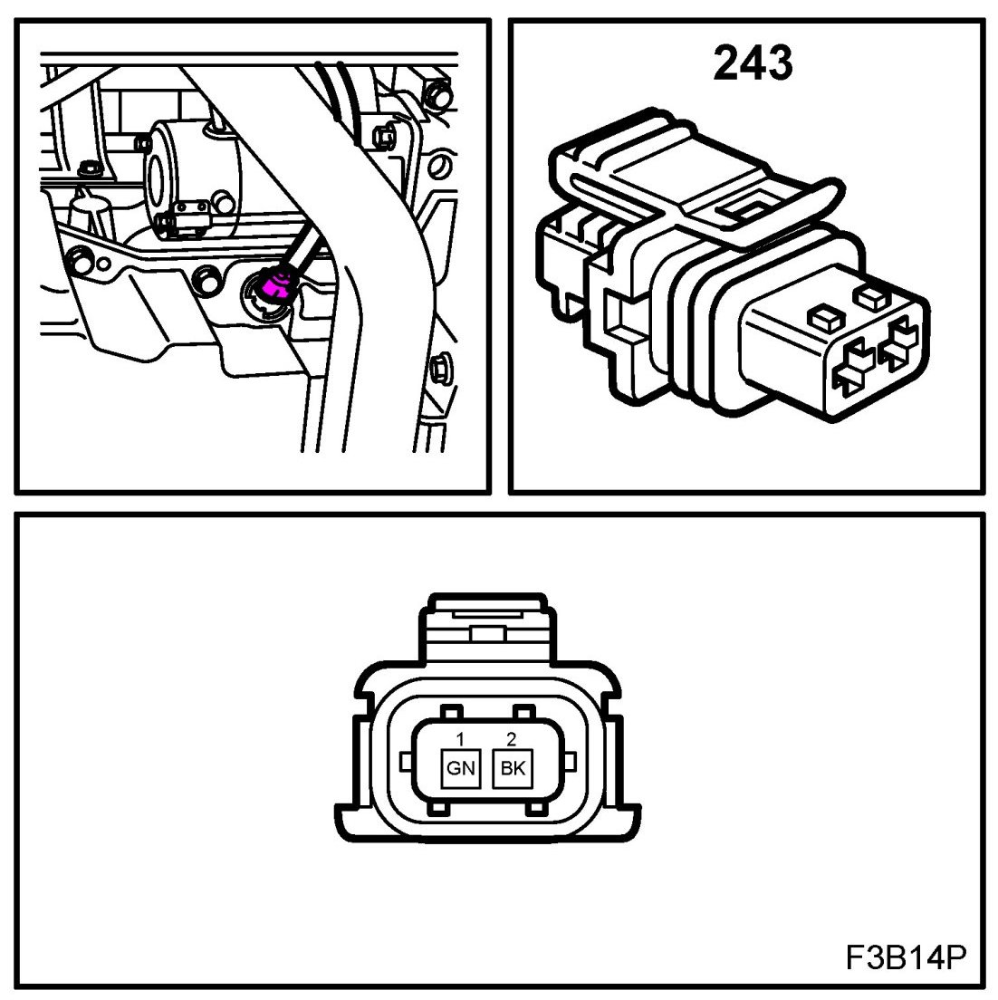
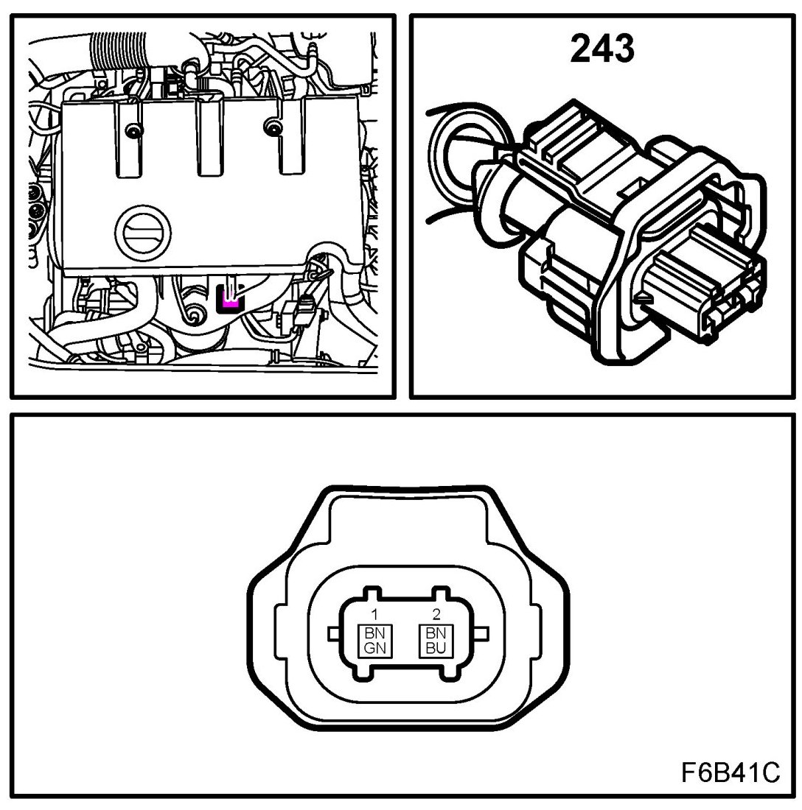
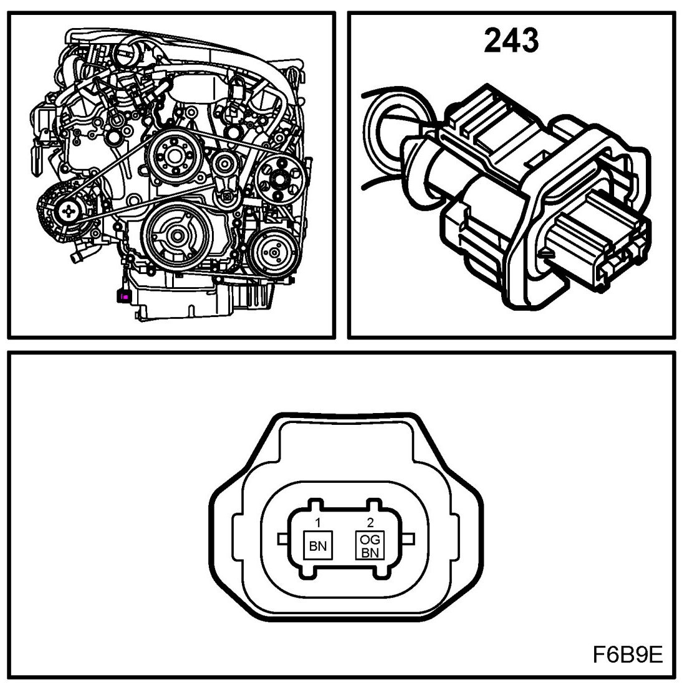
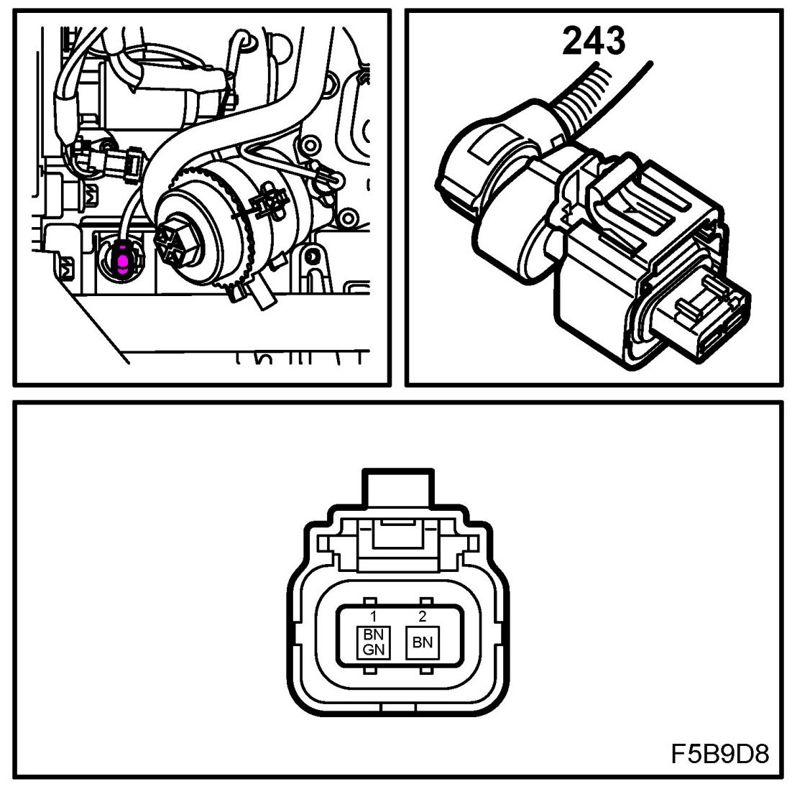
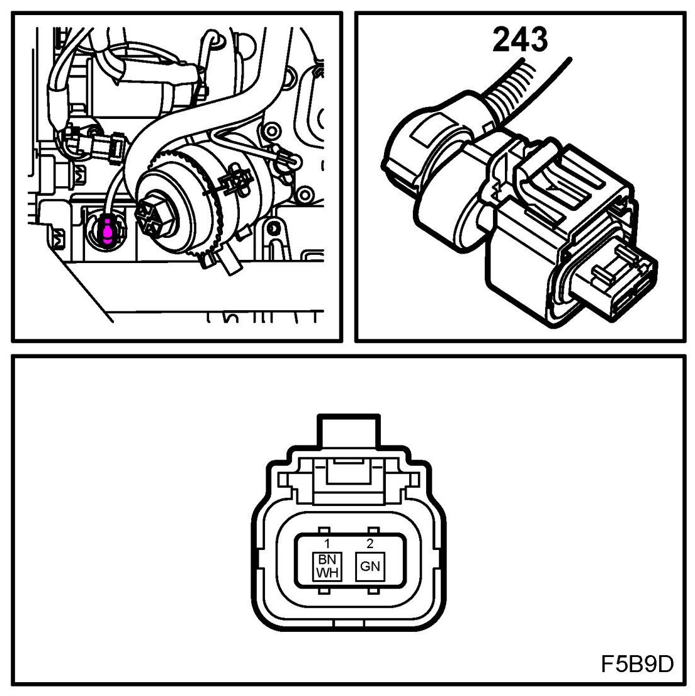
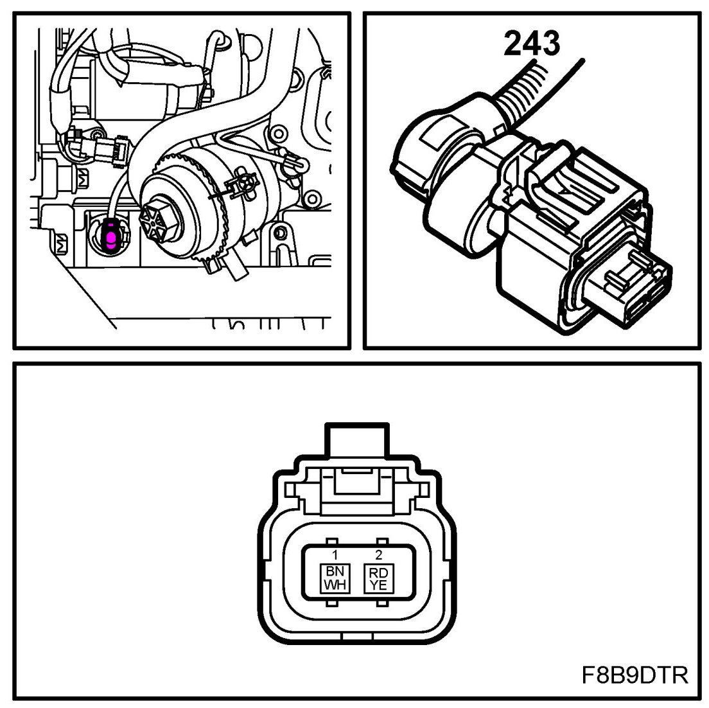

Oil Level Sensor: Locations
Engine Oil Level Switch (243)
Location
B207
at the bottom of front edge of the oil pan

Z18XE
at the bottom of front edge of the oil pan

B284
at the bottom of oil pan's rear edge

Z19DT
on rear of engine under crankshaft position sensor

Z19DTH
on rear of engine under crankshaft position sensor

Z19DTR
on rear of engine under crankshaft position sensor
